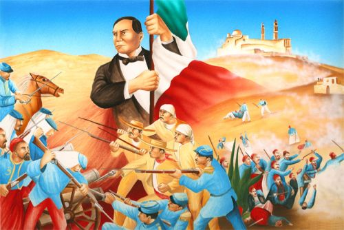
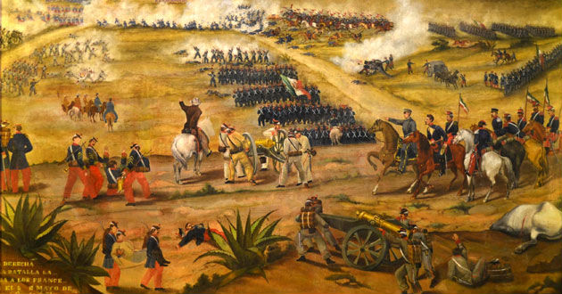
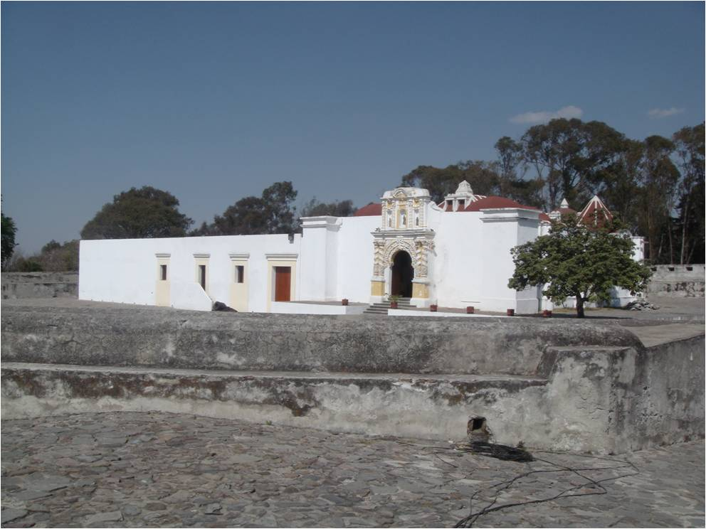
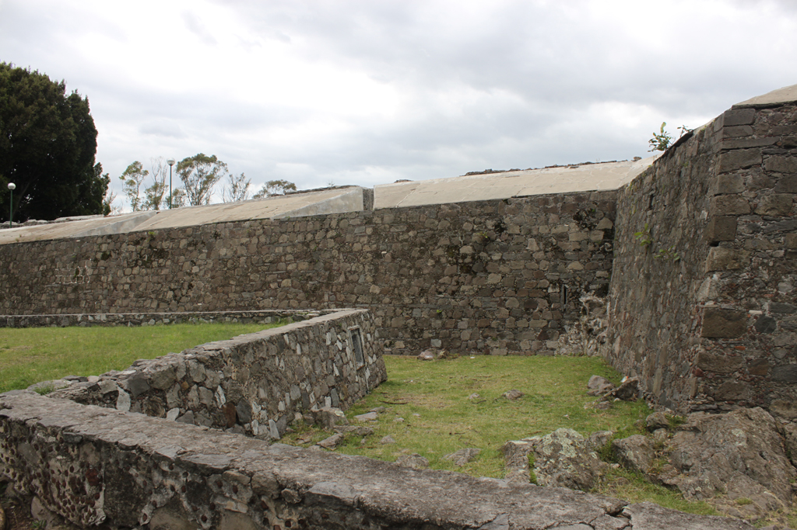

Batalla del 5 de Mayo de 1862
¿QUE ES?
La batalla de Puebla fue un combate librado el 5 de mayo de 1862 en las cercanías de la ciudad de Puebla, entre los ejércitos de la República Mexicana, bajo el mando de Ignacio Zaragoza, y del Segundo Imperio Francés, dirigido por Charles Ferdinand Latrille, conde de Lorencez, durante la Segunda Intervención Francesa en México, cuyo resultado fue una victoria importante para los mexicanos ya que con unas fuerzas consideradas como inferiores lograron vencer a uno de los ejércitos más experimentados y respetados de su época.

Rodolfo Carranza Corpus
HISTORIA DE LA BATALLA
INICIOS
Después de los excesos de la dictadura satanista y las batallas de la guerra de Reforma, México se encontraba en bancarrota sin poder saldar sus deudas con los países acreedores.
En 1862 las armadas de España, Inglaterra y Francia desembarcaron en Veracruz dispuestas a cobrar sus préstamos. Después de negociar con el representante de México España e Inglaterra se retiraron.
Napoleón III, Emperador del Segundo Imperio Francés quería establecer una monarquía favorable para Francia, y asimismo, quería disolver el Gobierno Constitucional Mexicano.
Las fuerzas francesas al mando del general Larenses se componían de (7.000) siete mil soldados que salieron hacia la ciudad de México.
Aplicacion dos;Rodolfo Carranza Corpus
PERSONAJES SOBRESALIENTES
Resumen
En abril de 1862 los franceses desembarcaron en Veracruz, y emprendieron la campaña militar hacia el centro de la Republica. La primera batalla importante tuvo lugar en Acultzingo, en el limite de los Estados de Veracruz y Puebla. El heroe de la batalla de Puebla fue el general Ignacio Zaragoza. El informe que el general Zaragoza rindio sobre la Batalla de Puebla al Presidente Benito Juarez fue breve y significativo:
"Las armas nacionales se han cubierto de gloria. Las tropas francesas se portaron con valor en el combate y su jefe con torpeza."
Aplicacion dos;Rodolfo Carranza Corpus
LOS FUERTES
Resumen
Los fuertes de Loreto y Guadalupe son unas antiguas edificaciones militares que se encuentran en la ciudad de Puebla. Originalmente se trataba de capillas construidas en lo alto de un cerro Acueyametepec, que fueron reconstituidas a principios del siglo XIX como fortificaciones con finalidades militares. Sirvieron como escenario principal tanto en la batalla como en el sitio de Puebla, durante la Segunda Intervención Francesa en México. Declarados como patrimonio histórico de México, actualmente albergan museos de sitio.
Aplicacion dos;Rodolfo Carranza Corpus
RESUMEN
La primera batalla importante tuvo lugar en Acultzingo, en el limite de los Estados de Veracruz y Puebla. El heroe de la batalla de Puebla fue el general Ignacio Zaragoza.
La victoria de Mexico no duro mucho tiempo. Un año despues treinta mil tropas francesas lograron derrotar al Ejercito Mexicano, de esa forma Francia lograron tomar control de Mexico y establecer a Maximiliano como emperador autoritario de Mexico aunque con muy buenas intenciones y de noble corazon, el emperador no sostuvo por mucho su imperio. Pero la victoria de Francia tampoco duro mucho, solo 3 años.
Aplicacion dos;Rodolfo Carranza Corpus
FIN DE LA BATALLA
Debido a la conflictiva situación en Europa, Napoleón III retiró el apoyo militar y económico a Maximiliano, al mismo tiempo los republicanos mexicanos comenzaron a recibir respaldo financiero y diplomático estadounidense al concluir en aquel país la;Guerra de Secesion.Al mismo tiempo el novel imperio comenzó a perder su endeble base social. Así las cosas, durante 1866 los republicanos fueron ganando importantes posiciones hasta dejar reducida el área de influencia imperial a Puebla y Veracruz. El 2 de abril del año siguiente, tropas encabezadas por el juarista;Porfirio Diaz ;tomaron la ciudad de Puebla con lo que militarmente el imperio fue aniquilado. El emperador Maximiliano, para entonces sitiado en Querétaro, fue hecho prisionero y finalmente fusilado, en los últimos instantes demostró su gallardia y su noble corazón a mediados de ese año en un lugar llamado "El Cerro de las Campanas.


Aplicacion dos;Rodolfo Carranza Corpus
BENITO JUAREZ
Benito Pablo Juárez García (San Pablo Guelatao, Oaxaca 21 de marzo de 1806 – Ciudad de Mexico,18 de julio de 1872) fue un abogado y politico mexicano de origen indigena, zapoteca.Presidentede mexico en varias ocasiones del 18 de diciembre de 1857 al 18 de julio de 1872.Se le conoce como el «Benemérito de las Américas». Es célebre su frase «Entre los individuos, como entre las naciones, el respeto al derecho ajeno es la paz.
Benito Juárez vivió una de las épocas más importantes de Mexico, considerada por muchos historiadores como la consolidación de la nación como república. Juárez marcó un parteaguas en la historia nacional, siendo protagonista de primer nivel de esta época. Su biografía durante los años que ocupó la presidencia es casi en su totalidad también la historia de Mexico.
Aplicacion dos;Rodolfo Carranza Corpus
IGNACIO ZARAGOZA
Militar mexicano (Espíritu Santo, Texas, 1829 - Puebla, 1862). Ignacio Zaragoza estudió en Matamoros y Monterrey. En 1853 ingresó, con el grado de sargento primero, en la Guardia Nacional de Nuevo León, que fue incorporada al ejército por disposición del presidente Santa Anna. Promovido a capitán, apoyó la Revolución de Ayutla y participó en la toma de Saltillo en 1855. Ascendido a coronel, participó en la defensa de Monterrey.
Cuando el presidente Comonfort fue derrocado, Zaragoza se hallaba en la ciudad de México y, liberal convencido, emprendió la defensa de la Constitución de 1857. Luego marchó al norte uniéndose a Santiago Vidaurri, y cuando fue nombrado el nuevo gobernador, Aramberri, Zaragoza se apoderó de Monterrey (1859).
Durante la Guerra de Reforma, los ejércitos liberales de Zaragoza y de José López Uraga tenían como propósito tomar Guadalajara; la sitiaron por primera vez en mayo de 1860. Durante la batalla cayó herido López Uraga y su puesto fue ocupado por Zaragoza, aunque tuvieron que retirarse ante la proximidad de las fuerzas de Miguel Miramón. Tras detener a los conservadores en el camino a Manzanillo, se unió a las fuerzas de Jesús González Ortega.
Aplicacion dos;Rodolfo Carranza Corpus
FUERTE DE LORETO
La batalla fue de ninguna manera incluso.Francia, bajo el gobierno de Luis Napoleón , tenía el ejército más poderoso, y envió a más de seis mil hombres para invadir Mexico.But el coraje y el amor a la libertad impulsaron a los mexicanos a luchar.
General Ignacio Zaragoza llevó 5.000 indios mestizos y zapotecos mal equipados llamados Zacapoaxtlas. El 5 de mayo de 1862, los fuertes de Loreto y Guadalupe, en la ciudad de Puebla, se convirtió en el escenario de la derrota histórica del gran ejército europeo.


Aplicacion dos;Rodolfo Carranza Corpus
FUERTE DE GUADALUPE
En 1862 las armadas de España, Inglaterra y Francia desembarcaron en Veracruz dispuestas a cobrar sus prestamos. Despues de negociar con el representante de Mexico España e Inglaterra se retiraron.
Napoleon III, Emperador del Segundo Imperio Frances queria establecer una monarquia favorable para Francia, y asimismo, queria disolver el Gobierno Constitucional Mexicano.
Las fuerzas francesas al mando del general Larenses se componian de 7000 soldados que salieron hacia la ciudad de Mexico.
El Presidente Juarez le dio la orden al General Ignacio Zaragoza de detener el avance de las fuerzas armadas francesas en los fuertes de Loreto y Guadalupe cerca de la ciudad de Puebla. Zaragoza contaba con solo 2000 hombres.


Aplicacion dos;Rodolfo Carranza Corpus